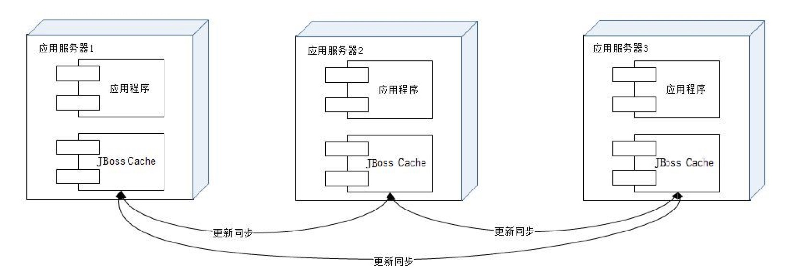
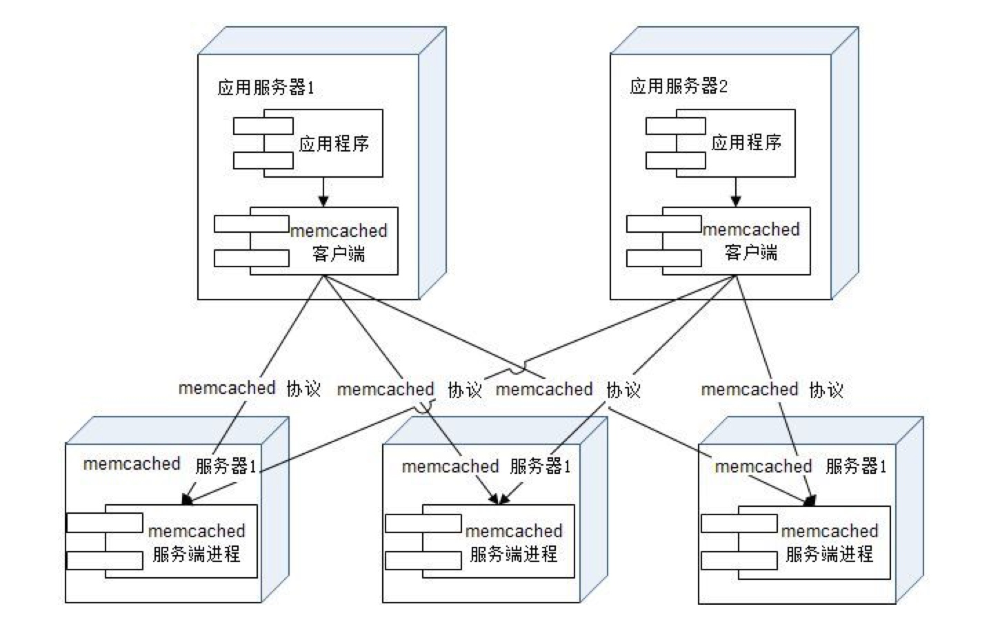
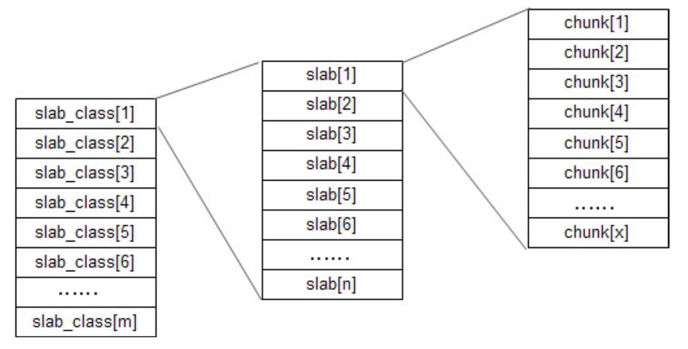

分布式缓存架构之 JBoss Cache 与 Memcached
JBoss Cache
Memcached
分布式缓存架构
分布式缓存指缓存部署在多个服务器组成的集群中，以集群方式提供缓存服务，其架构方式有两种，
- 以
JBoss Cache为代表的需要更新同步的分布式缓存 - 以
Memcache为代表的不互相通信的分布式缓存
JBoss Cache
JBoss Cache 的分布式缓存在集群中的所有服务器中保存相同的缓存数据，当某台服务器有缓存数据更新的时候，会通知集群中其他机器更新缓存数据或清除缓存数据，如下图。

这种方案多见于企业应用系统中，而很少在大型网站使用
Memcached

简单的通信协议
远程通信设计需要考虑两个因素:
- 是通信协议 即选择TCP/UDP/HTTP
- 是通信序列化协议 数据传输的两端，必须使用彼此可识别的数据序列化方式才能通信，如XML/JSON/Google Protobuffer等。
- Memcached使用tcp(udp也支持)通信，其序列化协议是一套基于文本的自定义协议，非常简单，以一个命令关键字开头，后面是一组命令操作数。 如读取数据命令协议是
get<key>。 Memcached后的许多 NoSQL 产品都借鉴了或直接支持这套协议
丰富的客户端程序
支持Java、C/C++/C#、Perl、Python、PHP、Ruby
高性能的网络通信
Memcached服务端通信模块基于Libevent，一个支持事件触发 的网络通信程序库。Libevent的设计和实现有许多值得改善的地方，但它在稳定的长连接方面的表现正是Memcached需要的
高效的内存管理
内存管理中一个令人头痛的问题就是内存随便管理，Memcached使用的办法是 固定空间分配
- Memcached将内存空间分为一组
slab - 每个slab里又包含一组
chunk - 同一个slab里的每个chunk的大小是固定的
- 拥有相同大小的chunk的slab被组织在一起，叫做
slab_class - 存储数据时根据数据的size，找一个大于size的最小chunk将数据写入。
- Memcached采用LRU(最近最久未使用)算法释放空间
- 由于数据只能存入一个比它大的chunk里，而一个chunk只能存一个数据，其他空间被浪费了。如果启动参数配置不合理，浪费会更加惊人
- 
- Memcached将内存空间分为一组